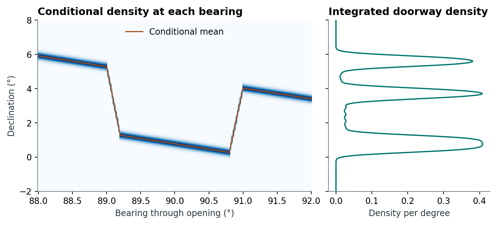
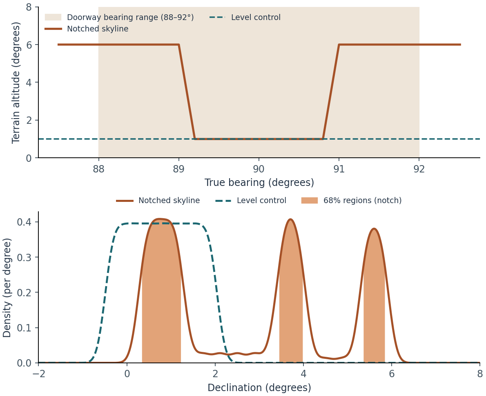

8 From a measured orientation to a declination distribution
Coverage of bearing densities on partial photographs.
Implementation. skyscapeR 2.0.9004, R/statistics.R, R/dec-pdf.R, R/mechanics.R and R/misc.R. A doorway admits a range of sightlines; each can meet a different altitude on the skyline. Silva (2020, secs 2–3, figs. 1–5) represents uncertainty in the orientation as a probability density and transforms that density using the local horizon. The worked example follows one doorway from its measured angular opening to three distinct regions in declination.
D01 checks the input densities. D02 compares the propagated density with independent integration and direct simulation on sloping, asymmetric and surveyed skylines. It documents grid-sensitive highest-density regions and the limits of the conditional Gaussian near the celestial pole.
8.1 What does a measurement PDF represent?
Let denote true azimuth, increasing clockwise from north. The density expresses how the analyst allocates support across the bearings consistent with the measurement. In Silva’s framework the appropriate density depends on the measurement and the architecture (Silva 2020, sec. 2). A directly observed axis with repeat readings can justify a concentrated density; an opening bounded by two jambs may justify a bounded interval. Assigning equal support throughout a doorway is an archaeological assumption. The PDF does not measure how often an original observer looked in each direction.
az.pdf(). In the normal family, unc is one standard deviation in degrees. In the uniform family, it is the half-width in degrees. A doorway bounded by 88° and 92° therefore has centre 90° and uniform half-width 2°. If instead those limits are interpreted as approximately two standard deviations from the centre, the normal standard deviation would be 1°. Substituting the same number into the two families changes the claim. Build 2.0.9006 evaluates the wrapped density at each grid bearing in [0°, 360°), sums contributions from periodic copies, then trims values below .cutoff. Uniform densities count every copy inside the inclusive half-width. Gaussian densities use shifted normal terms, or a Fourier representation for standard deviations of at least one turn. The defaults are 0.01° spacing and a density-height cutoff of , not an omitted probability-mass threshold. Retained tails are not renormalised at this stage.
dec.pdf(). Use this route when the observation and its uncertainty already refer to declination. The physical support ends at ±90°, and the default cutoff is . A normal curve centred near a pole can therefore have less than unit area after clipping. A directly constructed declination density assigns its family in that coordinate. A normal azimuth density passed through terrain can yield a markedly different declination curve (Silva 2020, sec. 3).
8.2 Point transformation and the conditional density
For geometric altitude , site latitude and true bearing , the spherical relation is (Silva 2020, eq. 1)
az2dec() evaluates a single sightline using the inverse Swiss horizontal transformation, shifting the azimuth convention at the interface. With refraction enabled, the code adjusts altitude using observer elevation, pressure and temperature before the inverse transformation. It rounds returned declinations according to the input bearing representation. When reading a value off a measured skyline, distinguish the altitude of the terrain from an angular clearance above it. The inputs, atmosphere and precision must match before using an independent calculation as a comparator (Astrodienst, n.d.).
coordtrans() implements the density transformation developed in Silva (2020). The published idea is to marginalise over the plausible bearings, retaining the dependence of horizon altitude on bearing (Silva 2020, sec. 3, figs. 2–5). In continuous notation,
For each sampled bearing, 2.0.9004 interpolates the profile height and its altitude uncertainty . It transforms the two endpoint heights to declinations and . The conditional density is approximated by a normal with mean and standard deviation . This preserves endpoint order reversals and allows the width to vary with the skyline. It is an endpoint-based approximation to a nonlinear mapping; the conditional mean need not equal the transform of . A zero transformed width raises an error because a Gaussian density with zero standard deviation is undefined in this computation. Artificially inflating the reported horizon error changes the model.

On a steep notch flank, even the geometric central track has a bearing derivative proportional to the skyline slope. Where is differentiable, in radians, . At a corner the adjacent segments have different slopes. A single error propagated at the centre can consequently miss entire branches sampled by the opening. The numerical mixture accommodates those branches without dividing by a local derivative.
The implementation interpolates the conditional density values and azimuth weights onto an integration grid and sums their products with trapezoidal weights. Distinguish three numerical settings:
| Setting | Default | Controls |
|---|---|---|
.prec |
0.1° | Azimuth spacing used to integrate the conditional contributions. Bearings spanning north are unwrapped for continuity. |
.res |
0.1° | Declination spacing at which the mixture is calculated. The upper calculation bound is added explicitly if necessary. |
.output.res |
0.01° | Spacing of the returned declination curve, obtained by linear interpolation. More output coordinates alone cannot resolve a missed peak. |
Version 2.0.9004 uses linear interpolation, avoiding negative overshoot that could occur with a spline. It also explicitly treats distributions split across north. Each individual transformed PDF is normalised by its trapezoidal area on the returned grid. Transforming an already summed SPD does not perform that individual normalisation. In ideal continuous arithmetic, integration and summation commute for a common kernel. Site-specific skylines imply different kernels, while truncation and per-curve normalisation can also change finite-grid results. Supply horizons in observation order. Preserve the original azimuth curves and horizons for any later declination significance test.
8.3 Worked example: a doorway across a notch
At a synthetic site at 51° N, give the 88–92° doorway a uniform density. The terrain stands at 6° on either side and falls to 1° between bearings 89.2° and 90.8°, with 0.2°-wide sloping shoulders. Set horizon altitude uncertainty to 0.2° throughout and turn refraction off. A control uses the same doorway and uncertainty with a level 1° skyline. Only the terrain profile changes.
site <- c(51, 0, 100)
notch <- createHor(c(0, 87, 89, 89.2, 90.8, 91, 93, 360),
c(6, 6, 6, 1, 1, 6, 6, 6),
loc = site, alt.unc = 0.2)
skyscapeR.vars(refraction = FALSE)
door <- az.pdf(90, unc = 2, pdf = "uniform")
d <- coordtrans(door, notch, xrange = c(-4, 9),
.prec = 0.02, .res = 0.02, .output.res = 0.01)
total <- spd(d, xrange = c(-4, 9), normalise = TRUE)
hpdi(total, mass = 0.68)
| Skyline | 68% highest-density regions in declination |
|---|---|
| Level at 1° | −0.08° to 1.64° |
| Notched | 0.35° to 1.21°, 3.46° to 3.97°, and 5.37° to 5.83° |
The central portion of the doorway faces the low notch. Its two flanks face higher terrain at different bearings, so they have different declinations even at the same terrain altitude. A conversion of only the centre and the two extremes loses this allocation of probability. Halving both calculation spacings from 0.02° to 0.01° gave the same reported interval endpoints to 0.01° in this example. This is a numerical sensitivity check on a constructed case, not field validation.
8.4 Summation, highest-density regions and inference
spd() linearly interpolates each retained curve onto a common angular grid, assigns zero outside its support and sums the heights. With an automatically determined range, it zeroes summed heights below the cutoff. An explicit range retains the calculated heights within that range. With normalise = TRUE, it divides by the trapezoidal area over the returned interval. A narrow explicit range therefore conditions the displayed mass on the selected interval. Earlier builds normalised using a sum of sampled heights: on a regular grid with zero endpoint heights, the new heights are the old ones divided by grid spacing. Record normalisation when comparing figure ordinates across versions (see the versioned function help and package NEWS).
hpdi() implements a discrete highest-density region (Hyndman 1996). On an equally spaced grid it sorts density heights and finds the level whose cumulative sum reaches the requested mass fraction, then includes all cells tied at that level. The result can include more than the nominal fraction. Separate connected runs give separate intervals; endpoints are grid coordinates. Gaps representing omitted cells are treated as zero mass, and regions spanning north are returned as two linear intervals. This is a description of concentration under the assumed measurement model. It does not test intentionality or reject a null hypothesis.
A strength of this workflow over a curve assembled by placing the same symmetric kernel at each converted central declination is that the horizon can change the shape of each site’s contribution. Silva’s worked comparison shows why curvigram and kernel-density peaks can shift relative to a terrain-aware SPD (Silva 2020, fig. 5). The price is sensitivity to the skyline, measurement model, endpoint approximation and numerical resolution. At limiting declinations or very small altitude uncertainties, check both grid convergence and the adequacy of the conditional Gaussian. A credible distribution still requires a defensible uncertainty model. The significance chapter shows how these same curves enter simulations.
Download the example scripts, inputs and outputs. The archived package supplies the implementation; the example is reproducible separately from the validation studies.
8.5 What the orientation displays calculate
For an opening defined clockwise from left edge to right edge , compute and centre . An opening from 355° to 5° then has width 10° and centre 0°. Keep a common row order when selecting entrance records and site horizons. Passing to plotBars() draws symmetric measurement limits. The default geometry is a line interval; explicitly supplying shade selects the bar default unless geometry is also specified. The unit labels the axis. Celestial bands require declination coordinates in this display. On a Cartesian azimuth axis an interval crossing north can extend below 0° or above 360°.
plotAzimuth() draws bearings clockwise from north, with spokes or short rim marks. For each reference declination and target location it computes a diurnal track with orbit(), interpolates altitude as a function of azimuth and solves for the zero-altitude roots on the eastern and western branches where bracketed. A two-epoch group contributes the stored boundary declinations. These compass marks assume a level horizon. The local terrain crossing for the same target can lie elsewhere. Inside/outside controls position the reference lines; labels remain outside. Repeated measured bearings can coincide.
The linked view of plot.skyscapeR.pdf() requires one transformed index, the original azimuth PDF and a matching horizon or ordered horizon list. The panels connect the input distribution, azimuth-to-declination mapping and output density. A mass such as 0.68 can select disjoint intervals. Supplying just one of the source inputs is an error. The legacy show.az switch is ignored with a warning. A plain density plot needs neither source input. subset.skyscapeR.pdf() uses the supplied R index on the list of curves and the name, azimuth, uncertainty and horizon metadata. It leaves other fields as stored. plot.skyscapeR.spd() draws the summed density, optionally with targets. A plotted peak carries no significance level by itself (Silva 2020).
8.5.1 Subsetting a directly constructed declination PDF
Build 2.0.9006 retains the centre vector in the selected order, including empty and repeated selections. The D01 rerun verifies the correction. For a dec.pdf() object, 2.0.9004’s subset.skyscapeR.pdf() selects the requested curves, names and uncertainties but leaves metadata$dec unchanged. Given centres of −10° and +20° named A and B, subset(x, 2) returns B’s curve and uncertainty but retains both centres in the metadata. A reader who pairs the first retained curve with the first stored centre would assign it −10°. To retain a consistent centre vector, apply the selection to the input records and construct their PDF, or explicitly index the original centres with the same selection. The worked check is in object-coverage.R in the photographic horizon examples.
Related function entries
az.pdf(), dec.pdf(), az2dec(), coordtrans(), spd(), hpdi(), createHor(), skyscapeR.vars(), randomTest(), modelTest().